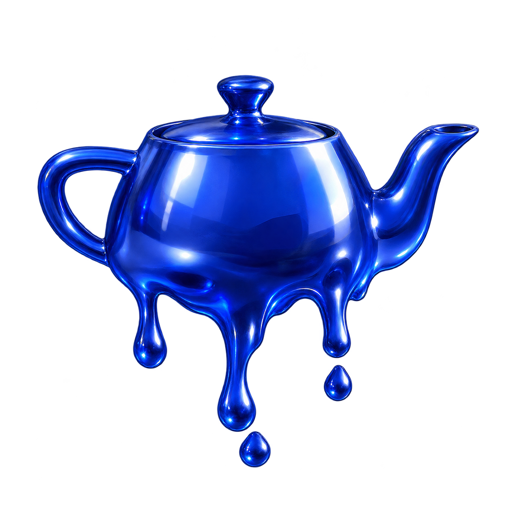

MeltGL melts images and video in the browser.
Drop a picture or a video on the box
| source | ||
| progress | 0.00 | |
| material | ||
| viscosity | 0.020 | |
| tension | 0.50 | |
| yield | 0.08 | |
| ground | ||
A picture with a transparent or flat background melts as an object, like the teapot. A photo with a busy background is a slab of material with the picture printed on it, and melts like one.
import { createMelt } from 'meltgl'
const melt = await createMelt({
target: document.querySelector('#poster'),
source: 'teapot.png',
material: 'wax',
duration: 8
})
melt.play()
melt.on('complete', () => location.href = '/next')
Target is an box; the canvas is placed over it and extends below by dripRoom. The
source is an <img>, a <video>, or a URL to either. A material is a
preset name or a preset with numbers changed, { base: 'honey', viscosity: 1.2, yield: 0.2 }.
layers takes a list of materials, outer first, for a shell over a core. seek,
reverse, configure and dispose do what they say. backend:
'svg' forces the fallback.
| Field | Range | What it does |
|---|---|---|
| viscosity | 0.001 to 50 | Kinematic viscosity of the liquid, log scale. Molten wax 0.02, honey 2.5, tar 12, solder 0.005. The solid sits four decades above the liquid and creeps. |
| density | 0.1 to 4 | Divides the viscosity, so a dense liquid of the same viscosity runs faster. |
| tension | 0 to 1 | Surface tension. Rounds drops, pinches necks. Higher gives fewer, fatter drips. |
| yield | 0 to 1 | Yield stress. Below it the liquid does not flow at all, so it piles and holds a shape. Chocolate 0.35, honey 0. |
| meltRate | 0.05 to 6 | How fast heat moves through the solid. |
| cooling | 0 to 3 | How fast liquid near the surface loses heat and sets. Wax freezes mid drip, honey does not. |
| gloss, fresnel, refraction | 0 to 1, 0 to 1, 0 to 0.08 | Highlight sharpness, rim brightness, how much the wet surface bends the picture under it. |
| blend, tint | 0 to 1, 4 numbers | How much the liquid takes the material's own colour instead of the picture's, and what that colour is. |
| translucency, absorption | 0 to 1, 3 numbers | How see-through a thin film is, and colour loss per unit thickness per channel. |
| Option | Default | What it does |
|---|---|---|
| duration | 1.6 | Simulated seconds at progress 1. A slow material may not be done by then, which is correct. |
| ground | open | open lets liquid fall out of the bottom. floor is a wall, so liquid lands and spreads into a puddle. |
| simulationScale | 0.4 | Field resolution as a fraction of the canvas. The picture is always drawn at full resolution through the reference map. |
| substeps | 2 | Solver steps per time step. Surface tension strength is limited by the substep, so more allow fatter drops. |
| viscosityIterations | 16 | Jacobi iterations of the implicit viscosity solve. More makes stiff regions stiffer. |
| pressureSolver, pressureCycles | multigrid, 2 | Multigrid V-cycles for the pressure projection. jacobi with pressureIterations is the fallback. |
| stepDuration, snapshotEvery, maxKeyframes | 1/60, 12, 48 | Fixed time step, steps between keyframes for scrubbing, and how many keyframes to hold. A run is repeatable for a seed. When the keyframes are full every other one is dropped and the spacing doubles, so memory is bounded whatever the duration. |
| maxStepsPerFrame | 24 | How many simulation steps one frame may run while catching up to a seek. A jump to the end of a long melt is spread over frames instead of blocking. |
| gravity, drag | 1, 1 | Pull strength, and the wall friction the liquid feels as it runs. |
| heatTop, coreHeat, surfaceHeat, surfaceDepth | 1.2, 0.1, 2, 5 | Extra heat at the top edge, heat reaching the core, heat at the surface, and how many cells deep the surface is. The defaults melt a picture from its edges inward rather than all at once. |
| onsetSpread, columnFeed, noiseScale, seed | 0.6, 0.5, 4, 11 | How unevenly the surface lets go, how much liquid the drip columns are fed, the size of that noise, and which pattern. |
| meltPoint, freezePoint, conduction | 0.5, 0.45, 4 | The temperature solid becomes liquid, the temperature liquid sets again, and how fast heat spreads. Wax freezes mid drip, honey does not. |
| solidViscosity, curvatureFlow, volumeGuard | 40, 0.1, 0.15 | How stiff the unmelted solid is, how much the outline rounds and necks pinch, and how hard the level set is held to its starting volume. |
| rim, edgeWidth, light | 6, 0.6, [-0.35, 0.6, 1] | How many cells the normal takes to turn and face the viewer, how soft the outline is, and the light direction. A zero light vector falls back to the default. |
| dripRoom, topRoom, sideRoom | 0.6, 0.08, 0.15 | Extra canvas below, above and beside the box, as fractions of its size, so the body has air to move into. |
| layerDelay | 0.35 | Seconds each extra layer waits before it starts heating, when layers is set. |
| key | auto | auto keys out a flat background so an opaque picture gets a silhouette. none keeps the whole rectangle. Or a colour and tolerance of your own. |
MeltGL is a small implementation of ideas from these papers. Wouldn't be possible without them!
meltgl.min.js (ES module, with source map),
meltgl.js (unminified), or npm install meltgl.
The simulation needs WebGL 2 with EXT_color_buffer_float or
EXT_color_buffer_half_float: Chrome 56, Firefox 51, Safari 15,
Edge 79 and later. Everything else gets the SVG filter path, which is a displacement warp of the source
rather than a simulation, and honours only material, noiseScale,
seed and duration.
git clone https://github.com/1etu/meltgl.git